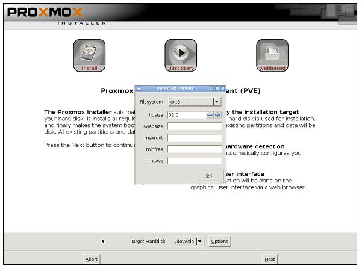
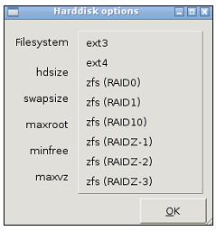
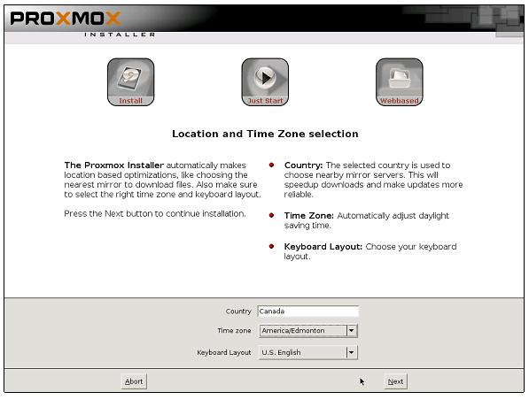
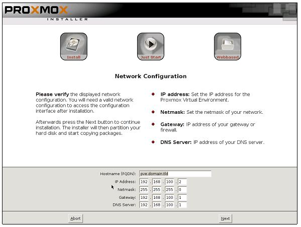
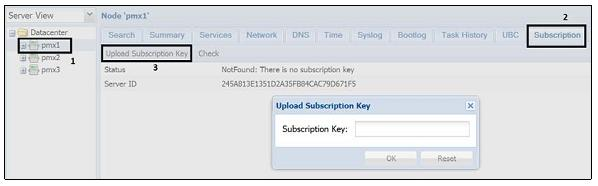
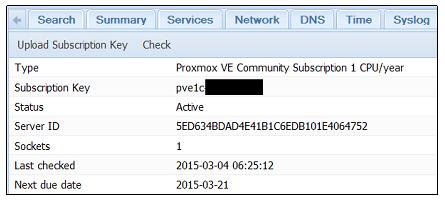

Глава 1. Установка Proxmox
В данной главе мы охватим следующие основы Proxmox:
-
Требования к аппаратным средствам
-
Подготовку к установке
-
Установку Proxmox на голом узле
-
Установку Proxmox на Debian системы
-
Подписки Proxmox
-
Запрет подписок Proxmox
-
Применение подписок Proxmox
-
Установку репозитория пакетов Proxmox
-
Поиск поддержки
Содержание
Virtual Environment (VE) (виртуальня среда) Proxmox является многоузловым кластерным гипервизором с открытым исходным кодом, построенным на Debian Linux и способным работать на общедоступных аппаратных средствах, те самым устраняя любые блокировки вендора. Proxmox свободно доступен без каких-либо блокированных особенностей. Тем не менее, доступна лицензия подписного типа для доступности репозитория уровня предприятия для получения хорошо проверенных патчей и обновлений. Подписки рекомендуются для Proxmox среды промышленного уровня.
![[Замечание]](../common/images/admon/note.png) | Замечание |
|---|---|
|
Гипервизор представляет собой программное обеспечение или встроенное ПО, которое создает слой между естественным оборудованием и операционной системой для формирования виртуальной среды создания и запуска виртуальных машин. Гипервизор эмулирует функции физического оборудования для предоставления виртуальным машинам выглядеть аналогично физическим ресурсам. |
Proxmox может быть настроен для работы в виртуальной среде всего нескольких узлов с виртуальными машинами или в среде с тысячами узлов. Поддерживая виртуальные машины KVM и OpenVZ на базе контейнеров, Proxmox VE является сегодня ведущим гипервизором. Proxmox имеет чрезвычайно активное сообщество готовое оказывать помощь любым бесплатным пользователям Proxmox. Кроме того, группа экспертов технической поддержки Proxmox в равной степени способно обрабатывать всех корпоративных пользователей с их критически важными виртуальными средами.
Как упоминалось ранее, Proxmox это мультиузловая среда, и это означает, что многие узлы могут образовывать единый кластер в котором виртуальная машина может быть перемещена на любой узел в кластере, тем самым делая возможной избыточную виртуальную среду. Весь Proxmox кластер может управляться через надежный графический интерфейс пользователя (GUI). В Proxmox VE 3.4 через GUI только один кластер является управляемым.
Вот некоторые из примечательные особенности Proxmox VE:
-
Он обеспечивает мультиузловую кластерную среду для виртуализации. Ни один узел не выступает в качестве ведущего, тем самым устраняя единую точку отказа.
-
Он обеспечивает высокую доступность (HA, High Availability) виртуальных машин.
-
Он дает централизованное веб-управление и единый интерфейс для управления всем кластером.
-
Консоль может быть доступна через безопасные VNC, SPICE и HTML5 на основе noVNC.
-
Он обеспечивает поддержку многих источников аутентификации, таких как локальное применение Pluggable Authentication (РАМ), Microsoft ADS и LDAP.
-
Proxmox cluster fie system (pmxcfs) может быть использована для для хранения файлов настройки для репликации в реальном времени на всех узлах с применением corosync http://en.wikipedia.org/wiki/Corosync_%28project%29
-
Она обеспечивает ролевое управление разрешениями для объектов VMS, хранилищ, узлов, пулов и тому подобного.
-
В отличие от SOAP, REST не является протоколом, но сочетает различные стандарты, такие как HTTP, JSON, XML и URI. Посетите http://www.restapitutorial.com для информации о базирующемся на REST API.
-
Он предоставляет мощный встроенный межсетевой экран для хост- узлов и виртуальных машин.
-
Он обеспечивает миграцию виртуальных машин между физическими узлами приналичии общего хранилища или без него.
-
Он поддерживает типы систем хранения основного направления, такие как Ceph, NFS, ZFS, Gluster и ISCSI.
-
Он предоставляет регистрацию по всему кластеру.
Приведем здесь рекомендуемые конфигурации аппаратных средств для стабильно работающего кластера Proxmox:
-
64-битный процессор Intel или Amd
-
Материнская плата с поддержкой двух- или четырех- ядерного Intel VT или Amd-V
-
16ГБ памяти ОЗУ
-
Две карты сетевых адаптеров (NIC, Network Interface Card)
-
RAID контроллер с устройством резервной батареи (BBU, Battery Backup Unit)
-
Твердотельные диски (SSD, Solid State Drive) для операционной системы или SSD для совместно используемого узла
-
Ограждающее оборудование только в случае необходимости высокой доступности
|
| Замечание |
|---|---|
|
Для получения дополнительной информации об ограждающем оборудовании посетите https://pve.proxmox.com/wiki/Fencing. |
Следующая таблица приводит список конфигурации узла сервера, который может быть использован в промышленной среде:
| Потребность | Аппаратные средства |
|---|---|
Процессор/ ЦПУ |
Intel Xeon E5-2630 v3 2.4ГГц |
Материнская плата |
Intel S2600CP2 Dual LGA2011 |
Оперативная память |
Kingston 16 GB DDR3 Registered ECC |
Источник питания |
С резервированием |
Отметим, что пример конфигурации приводится исключительно для справки. Ваше требования будут варьироваться в зависимости от рабочей нагрузки и ожидаемой производительности. Регулируйте требования к оборудованию в соответствии с пониманием того, что большее число ядер в гипервизоре повысит производительность виртуальных машин также как более высокое значение тактовой частоты используемого процессора. При более высоком числе ядер между процессами может быть распределено большее число потоков (threads).
| Совет | |
|---|---|
|
Стоит упомянуть, что лучше выбрать процессор с бОльшим размером кэша для узла с большИм объемом памяти для минимизации доступа к основной памяти и максимизации производительности каждого процессорного ядра. |
Proxmox является кластерным гипервизором. Для того, чтобы построить кластер требуется, как минимум, два узла. Для преследуемых этой книгой целей убедитесь что вы располагаете достаточным количеством компонентов для установки двух узлов при выборе оборудования.
|
| Замечание |
|---|---|
|
Для получения дополнительной информации по Proxmox посетите http://www.proxmox.com/. |
Хотя кластер Proxmox может быть установлен только на два узла, рекомендуется применять минимум три узла для промышленной среды.
|
| Замечание |
|---|---|
|
В кластере кворум устанавливается, как минимум тремя голосами. Каждый узел считается одним голосом. Благополучие кластера зависит от такой демократической системы, при которой побеждает большинство голосов. Так, в кластере из двух узлов при выходе из строя одного узла другой узел может подать только один голос, создавая неразрешимую ситуацию. В кластере с тремя узлами, при отказе одного узла, общее число голосов от оставшихся узлов составит два возможных голоса из трех. Таким образом, работа кластера продолжится. В любом случае, кластер из двух узлов не рекомендуется для промышленного кластера. Тем не менее, он все еще может быть создан с помощью инструкции доступной на https://pve.proxmox.com/wiki/TwoNode_High_Availability_Cluster. |
После того, как необходимое оборудование собрано, в данном рецепте мы собираемся рассмотреть что нам подготовить перед установкой Proxmox.
Приготовление
Для установки Proxmox мы собираемся применять установочный диск Proxmox VE. Вначале нам необходимо подготовить диск с установочным образом ISO Proxmox.
Как это сделать...
Вот шаги по установке Proxmox:
-
Загрузите образ ISO Proxmox посетив http://proxmox.com/downloads/category/iso-images-pve
-
Воспользуйтесь вашей программой прожига для копирования ISO на DVD. {Прим. пер.: или, если не хотите следовать приводимой ниже инструкции, примените одно из средств для переноса ISO на флеш-носитель с сохранением возможности загрузки, например: http://unetbootin.github.io/, http://www.ubuntu.com/download/desktop/create-a-usb-stick-on-windows.}
-
Загрузите физический узел с подготовленного на предыдущем шаге диска для начала установки.
Есть кое-что еще...
Некоторые узлы не могут иметь ROM устройств, доступных для установки с диска. В таких случаях, можно установить Proxmox путем переноса образа ISO на флэш-накопитель USB. Обратите внимание, что для того, чтобы загрузиться с USB флеш-диска, ваша материнская плата должна поддерживать опцию загрузки с USB. Проверьте в BIOS {Прим.пер.: firmware} материнской платы, прежде чем приступать к следующим шагам. Если материнская плата не поддерживает опцию загрузки с USB, она также не сможет поддерживать внешнее USB ROM-устройство. В этом случае для продолжения лучше всего установить ROM диск в компьютер или воспользоваться новой материнской платой, если это возможно. Вот инструкции для переноса образа ISO на USB и его использования в качестве загрузочного диска:
В Windows воспользуйтесь следующими шагами:
-
Загрузите образ ISO Proxmox посетив http://proxmox.com/downloads/category/iso-images-pve
-
Переименуйте расширение загруженного ISO образа с .iso на .raw.
-
Загрузите и установите приложение записи образов USB с https://github.com/downloads/openSUSE/kiwi/ImageWriter.exe.
Замечание В некоторых версиях Windows 7, предыдущее средство записи может не может работать. В этом случае, загрузите и установите ImageUSB с http://www.osforensics.com/tools/write-usb-images.html. {Прим.пер.: или воспользуйтесь одним из любых других доступных средств.}
-
Пользуясь загруженным инструментом перенесите ISO образ на USB-устройство.
-
Вставьте USB носитель в USB порт физического узла и загрузитесь с USB носителя {Вы уже проверили, что firmware материнской платы узла поддерживает загрузку с USB!}.
В Linux применяйте следующие шаги:
-
Загрузите образ ISO Proxmox посетив http://proxmox.com/downloads/category/iso-images-pve
-
Вставьте USB носитель в USB порт узла и найдите имя устройства с применением
#fdiskИмя должно быть в формате/dev/XXX. -
Примените следующую команду для копирования ISO на USB носитель. Будьте очень аккуратны при использовании устройства в имени следующей команды. Неверное имя устройства уничтожит все данные на этом устройстве:
#dd if=<Proxmox ISO file> of=/dev/XXX bs=1M
-
Перезагрузите узел с USB носителя для запуска установки {вы уже проверили, что firmware материнской платы узла поддерживает загрузку с USB!}.
Процесс установки Proxmox полностью управляется графическим интерфейсом с помощью различных подсказок. В этом рецепте мы последуем следующими шагами в создании нашего первого узла Proxmox.
Приготовление
Включите питание и загрузите физический узел, используя установочный диск или USB-носитель созданный нами в предыдущем рецепте. На следующий снимок экрана показывает как выглядит экран после загрузки:
Как это сделать...
-
В главном окне установки после завершения процесса загрузки нажмите для запуска установки.
-
В экране
End User License Agreement (EULA)кликните согласие:Agree. -
На данном шаге мы выбираем диск для установки на нем гипервизора. Начиная с Proxmox VE 3.4 была добавлена новая функция для изменения файловой системы. После выбора
Target Harddiskв выпадающем меню, выберитеOptions, чтобы открыть диалоговое окно выбораFilesystem. Следующий снимок экрана показывает экран выбора дисков с открытым диалоговым окномFilesystem:
-
Из ниспадающего меню
Filesystemвыберите желаемую файловую систему. Выберите нужный размер файловой системы вhdsize. В версии 3.3 была добавлена поддержка для файловых системext3,ext4иZFS. Добавьте дополнительную информацию, такую как значенияswapsize,maxroot,minfreeиmaxvzв соответствии с требованиями или оставьте их пустыми для продолжения со значениями по умолчанию, затем кликните наNext. Следующая таблица описывает функции этих четырех параметров. Эти значения обычно являются альтернативными друг другу, что означает, что если введено значение для одного из этих параметров, значения для других параметров вычисляются автоматически:Параметр Функция swapsizeОпределяет размер раздела подкачки. Существуют сложные формулы для расчета этого значения. Тем не менее, как правило, оставляется в качестве значения по умолчанию.
maxrootОтносится к максимальному размеру, который должен иметь корневой каталог.
minfreeОтносится к минимальному свободному пространству для выделения разделу pve.
maxvzОтносится к максимальному пространству для выделения локальному хранилищу виртуальных машин. Путь по умолчанию для локального хранения виртуальных машин это
/var/lib/vzСледующий снимок экрана показывает поддерживаемые файловые системы после нажатия на ниспадающее меню:

-
После выбора диска для установки мы должны выбрать информацию по локализации, а именно
Country,Time ZoneиKeyboard Layoutна основании выбираемого языка. Затем нажмитеNext. Следующий экранный снимок отобразит экран локализации:
-
Введите и подтвердите пароль для пользователя root. Затем введите адрес е-mail, на который отсылать все уведомления кластера Proxmox. Нажмите на
Next -
На данном шаге вы должны ввести имя хоста и сетевую информацию, такую как
IP Address,Gateway,DNS Serverи тому подобное. Введите необходимую информацию для вашей среды, азатем нажмитеNext. Следующий экранный снимок показывает экран с сетевой информацией:
-
На данный момент была собрана вся необходимая информация и была запущена основная установка. После ее выполнения удалите установочный диск или носитель USB и кликните на
Reboot.
Есть кое-что еще...
Следуйте шагам с 1 по 7 на втором узле. Для Proxmox кластера минимально требуются два узла. Дополнительная информация по настройке кластера доступна в Главе 3. Управление кластером и виртуальными машинами.
Хотя рекомендуется установка Proxmox на естественном голом узле, время от времени может оказаться необходимым установить Proxmox на существующем узле Debian. В данном рецепте мы увидим как устанавливать Proxmox VE на Debian. Обратите внимание, что Proxmox может быть установлена только на 64-разрядном оборудовании и 64-разрядной операционной системе.
Приготовление
Установите Debian следуя указаниям официального сайта Debian на http://www.debian.org. Перед установкой Proxmox на узле Debian, убедитесь, что имя хоста может быть разрешено. Проверьте имя хоста, используя следующую команду:
#nano /etc/hosts
Вы должны получить следующие записи:
127.0.0.1 localhost.localdomain localhost 172.16.0.71 pmx1.domain.com pmx1 pvelocalhost
Если записи утрачены, введите соответствующий IP адрес ассоциируемый с именем хоста узла. Запись
epel.repo должна присутствовать в конце строки.
Как это сделать...
Примените следующие шаги для установки Proxmox на системуDebian:
-
Добавьте репозиторий Proxmox VE в список источника следующим образом:
#nano /etc/apt/sources.list deb http://ftp.ca.debian.org/debian wheezy main contrib #PVE repository for installation deb http://download.proxmox.com/debian wheezy pve #PVE security updates deb http://security.debian.org/ wheezy/updates main contrib
Совет Из-за ошибки в ОС Debian,
apt-getможет отображать ошибку, не найдя/binary-i386с сообщением об ошибкеUnable to find expected entry 'pve/binary-i386/packages'. Эта ошибка может возникнуть, даже когда установлен 64-разрядная операционная система Debian. В таких случаях, изменить запись репозитория PVE следующим образом:deb [arch=amd64] http://download.proxmox.com/debian wheezy pve
-
Добавьте ключ репозитория Proxmox VE применив следующую команду:
#wget –O-http://download.proxmox.com/debian/key.asc | apt-key add –
-
Обновите репозиторий использовав следующую команду:
#apt-get update
-
Обновите операционную систему с применением следующей команды:
#apt-get dist-upgrade
-
Установите ядро Proxmox VE:
#apt-get install pve-firmware pve-kernel-2.6.32-37-pve
-
Установите заголовки ядра:
#apt-get install pve-header-2.6.32-37-pve
-
Убедитесь, что ядро Proxmox выбрало загрузчиком
grub2 -
Перезагрузите узел для активации нового ядра Proxmox VE.
-
Проверьте работы ядра чтобы убедиться, что загружено необходимое ядроProxmox VE:
#uname –a
-
Проверьте настройку
grub2используя следующую команду:#update-grub
-
Установите пакеты Proxmox VE:
#apt-get install Proxmox-ve-2.6.32 ntp ssh lvm2 postfix ksmcontrol-daemon vzprocps open-iscsi bootlogd
-
В процессе установки примите предложения по устранению
EximиPostfix, установленные ранее.Exim, если потребуется, может быть установлены позже. -
Перезагрузите Proxmox VE после завершения установки.
Есть кое-что еще...
Следуйте шагам с 1 по 13 для установки второго узла. Для Proxmox кластера минимально требуются два узла. Мы сделаем более хороший обзор графического интерфейса Proxmox в Главе 2. Знакомство с графическим интерфейсом Proxmox.
Proxmox VE сам по себе свободен для применения. Не существует абсолютно никаких платежей включенных в загрузку простого образа ISO и установки полнофункционального кластера Proxmox без оплаты лицензий или подписок. Тем не менее, существует опция подписки Proxmox для поддержки проекта, которая делает доступным репозиторий уровня предприятия. Не существует различий функционала для Proxmox версий Free (свободная) и Subscription (подписка). Они одни и те же. Разница заключается между типом выпусков, обновлений и исправлений, которые они получают.
| Совет | |
|---|---|
|
Пакеты из репозитория предприятия проходят сквозь дополнительный уровень безопасности и тестирования. Таким образом, subscription (подписка) рекомендуется для Proxmox VE производственного уровня. |
Это не следует путать с тем фактом, что кластер Proxmox построенный без подписки и не достаточно стабилен для применения. Новые пакеты, как правило, выпускаются вначале через не подписной репозиторий. Такие же пакеты выкладываются через репозиторий уровня предприятия позже. Эта задержка позволяет команде Proxmox поставить точку и исправить любые затяжные ошибки или дефекты в пакете. Из-за ошибок кластер, работающий с критически важными виртуальными машинами, может столкнуться с неприемлемыми простоями, которые не повлияют на среды меньшего размера,которые в состоянии выдержать время простоя.
Существует четыре уровня подписок с различной стоимостью, такие как
COMMUNITY,
BASIC,
STANDARD и
PREMIUM. За дополнительной информацией о подписках Proxmox
обращайтесь на https://www.proxmox.com/proxmox-ve/pricing.
Только что установленный Proxmox VE без подписки высветит после входа в Proxmox GUI сообщение, показанное на следующем сохраненном экране:
Это происходит потому, что по умолчанию разрешен репозиторий уровня предприятия. Если вы решите не получать никакую подписку Proxmox и продолжать использовать полностью свободную версию, вы должны запретить репозиторий уровня предприятия.
Приготовление
Зарегистрируйтесь на узле Proxmox через консоль SSH. Репозиторий уровня предприятия может быть отключен только из командной строки.
Как это сделать...
Репозиторий уровня предприятия находится в списке
/etc/apt/sources.list.d/pve-enterprise.list. Мы должны скрыть его строкой комментария для
запрета этого репозитория:
# nano /etc/apt/sources.list.d/pve-enterprise.list #deb https://enterprise.proxmox.com/debian wheezy pve-enterprise
Добавьте репозиторий Proxmox без подписки следующим образом:
# nano /etc/apt/sources.list deb http://download.proxmox.com/debian wheezy pve-no-subscription
Как это работает...
Никакие перезапуск служб или перезагрузка не требуются для применения изменений. Выйдите из Proxmox GUI и снова войдите,
чтобы увидеть что изменения были применены правильно. Окно сообщения "no subscription" не должно всплывать после входа в систему.
Подписками можно управлять в графическом интерфейсе Proxmox на вкладке Subscription.
Вот снимок экрана узла Proxmox без подписки:
Для активации подписки необходимо загрузить на узел Proxmox ключ подписки, если вы выбрали подписку Proxmox любого типа. Ключ подписки высылается электронным письмом после успешной оплаты. Ключ может может быть загружен через графический интерфейс Proxmox.
Приготовление
Зарегистрируйтесь в Proxmox GUI с помощью доступа через ссылку в браузере и введите учетные данные администратора. Имя пользователя
по умолчанию root, а пароль тот же, что был введен при установке: https://<pmx_node_IP>:8006.
Как это сделать...
-
После регистрации в Proxmox GUI нажмите на узел, к которому будет применяться подписка.
-
Выберите закладку
Subscription. -
Нажмите на кнопку
Upload Subscription Keyчтобы открыть диалоговое поле ввода ключа, как показано на сохраненном экране ниже:.
-
Выполните copy/pust ключа подписки из полученного электронного письма в диалоговое поле ключа, затем нажмите
OK. -
Кликните
Check. На данный момент ключ будет проверен Proxmox на предмет его правильности. После завершения активации вы должны увидеть следующий вывод:
Есть кое-что еще...
Если был введен недопустимый ключ, то отображаемое на дисплее должно быть похоже на следующее:
В этом случае просто загрузите правильный ключ и активируйте его снова. Также вы можете увидеть замечание о недопустимости ключа
в случае, когда ключ уже был активирован для другого узла, который больше не обслуживается. В этом случае обратитесь в Proxmox
или к третьему поставщику лицензии, у которого она была приобретена сзапросом повторного выпуска той же лицензии. Затем просто
кликните кнопку Check для повторной активации ключа.
Каждый ключ жестко программируется с каждым ID сервера. Ключ должен быть перевыпущен Promox для его применения.
| Совет | |
|---|---|
|
Пожалуйста, имейте в виду, что, как только ключ переиздан, он больше не будет работать на предыдущем узле, на котором он
был активирован. Если вы попросили переиздать лицензию по ошибке, попросите переиздать его снова и нажмите на кнопку
|
Proxmox VE предлагает три главных репозитория:
| Репозиторий | Подписка | Применение |
|---|---|---|
{уровня предприятия} |
Требуется |
В основном используется в промышленных узлах Proxmox. Пакеты в этом хранилище проходят дополнительные контроль, исправление ошибок и тестирование. |
{без подписки} |
Не требуется |
Применяется для обучения, тестирования и домашних узлов кластера Proxmox. Пакеты в этом репозитории проходят через первичное тестирование на ошибки и достаточно стабильны чтобы быть ссылками в качестве конечного выпуска. |
{тестовый} |
Не требуется |
Применяется только для тестирования и разработки Proxmox. Пакеты вэтом репозитории обычно самые последние и все еще находятся в стадии окончательных фаз цикла выпуска таких, как бета- тестирование, и кандидат выпуска. Пакеты в данном репозитории могут содержать ряд ошибок и проблем. Пользователи данного репозитория поощряются разработчиками в распространении сообщений об ошибках. |
Местоположение и содержание файла источника Enterprise
Repository следующее:
#cat /etc/apt/sources.list.d/pve-enterprise.list deb https://enterprise.proxmox.com/debian wheezy pve-enterprise
Местоположение и содержание файла источника No-Subscription
Repository следующее:
#cat /etc/apt/sources.list deb http://ftp.ca.debian.org/debian wheezy main contrib deb http://download.proxmox.com/debian wheezy pve-no-subscription deb http://security.debian.org / wheezy/updates main contrib
Proxmox предлагает Test Repository чтобы
дать возможность пользователям попробовать новые свойства или пакеты. Все новые свойства Proxmox выпускаются в тестовом
репозитории до того, как они станут доступными в репозиторях без подписки и уровня предприятия. Пакеты в тестовом репозитории
не прошли полное тестирование и могут содержать ошибки. По этой причине данный репозиторий никогда не должен применяться в
кластере промышленного уровня. По умолчанию тестовый репозиторий не доступен.
Приготовление
Зарегистрируйтесь на узле Proxmox через консоль или SSH. Для подключения тестового репозитория понадобится отредактировать с применением CLI файл источников репозитория.
Как это сделать...
Используйте следующие этапы для установки репозитория пакетов Proxmox:
-
Откройте файл источников репозитория с помощью любого любимого текстового редактора:
#nano /etc/apt/sources.list
-
Сделайте необходимые изменения чтобы записи выглядели похожими на следующие:
deb http://ftp.debian.org/debian wheezy main contrib deb http://download.proxmox.com/debian wheezy pvetest deb http://security.debian.org/ wheezy/updates main contrib
-
Сохраните файл и выйдите из редактора.
-
Выполните следующую команду для обновления репозиториев:
#apt-get update
Как это работает...
Как правило, объявление о наличии нового пакета осуществляется на официальном форуме Proxmox
(http://forum.proxmox.com). Название пакета или информация о версии
содержатся в объявлении. Если вы хотите информацию по пакету, просто спросить об этом на форуме. Если у вас есть необходимая информация,
просто выполните команду apt-get для установки пакета через CLI:.
#apt-get install <package_name>
Есть кое-что еще...
В рамках репозиториев Enterprise, No-Subscription и Test существует два устаревших репозитория, которые больше не поддерживаются и не обновляются:
-
Outdated stable repository (pve): Данный репозиторий прекратил получение обновлений после начального выхода Proxmox VE 3.1:/etc/apt/sources.list deb http://ftp.debian.org/debian wheezy main contrib deb http://download.proxmox.com/debian wheezy pve deb http://security.debian.org/wheezy/updates main contrib
Если вы обновляете Proxmox VE с 2.x на 3.x, вторая запись в /etc/apt/sources.list
Outdated stable repository (pve)должна быть изменена сwheezy pveнаwheezy pve-nosubscription. -
Outdated Proxmox VE 2.x stable repository (squeeze pve): Чтобы иметь стабильный узел Proxmox настоятельно рекомендуется модернизировать и обновить Proxmox VE на последний стабильный выпуск./etc/apt/sources.list deb http://ftp.debian.org/debian squeeze main contrib deb http://download.proxmox.com/debian squeeze pve deb http://security.debian.org/squeeze/updates main contrib
Как отмечалось в начале данной главы, Proxmox имеет активное сообщество пользователей готовых оказать помощь любому нуждающемуся в ней. Существует несколько способов которыми новый пользователь Proxmox может обратиться за помощью и поддержкой для обучения и расширения знания о Proxmox VE:
| Помощь и поддержка | Свободная/ подписка |
|---|---|
Форум |
Свободно |
Вики/ Документация |
Свободно |
Портал пользователей и билеты |
Требует подписки |
Список рассылки Promox |
Свободно |
Отслеживание ошибок Promox |
Свободно |
Форум
Официальный форум Proxmox является местом сбора для новичков или экспертов для получения или предоставления помощи от сообщества Proxmox. Это также обширный информационный ресурс последних вопросов и решений многих проблем. Некоторые из сотрудников Proxmox также проводят значительное количество времени в этом форуме, чтобы предложить помощь за пределами своих должностных обязанностей. Существует массив экспертов Proxmox готовых помочь, не ожидая ничего взамен. Это единственное место поиска поддержки для пользователей Proxmox Free и с подпиской на уровне COMMUNITY. Для доступа к официальному форуму посетите Proxmox http://forum.proxmox.com.
Вики/ Документация
Proxmox сайт Wiki содержит большое количество информации об установке, настройке и управлении кластеров Proxmox. Вся документация написана в очень доступной для понимания форме с большим количеством иллюстраций, где это возможно. Использование страницы Proxmox Wiki является полностью бесплатным и не требует регистрации. Посетите https://pve.proxmox.com/wiki/Main_Page для знокамства с официальной документацией Proxmox.
Портал пользователей и билеты
Пользовательский портал доступен только для пользователей с уровней подписки BASIC, STANDARD и PREMIUM. Билеты подписки должны открываться на пользовательском портале https://my.proxmox.com/ для получения технической поддержки напрямую от персонала Proxmox.
В зависимости от уровня подписки отличается число билетов, которое может быть открыто. Отклики гарантируются в течение одного бизнес- дня. Ознакомьтесь с различными уровнями поддержки для подписок посетив https://www.proxmox.com/proxmox-ve/pricing.
Список рассылки Promox
Существует два различных списка почтовых рассылок доступных в Proxmox:
-
User mailing list:: Этот список почтовых рассылок имеет адресатами обычных пользователей Proxmox для задания технических вопросов ( http://pve.proxmox.com/cgi-bin/mailman/listinfo/pve-user) -
Developer mailing list:: Этот список почтовых рассылок предназначен для разработчиков, которые интересуются участием в вопросах, связанных с обязательствами и разработкой связанными с кодом ( http://pve.proxmox.com/cgi-bin/mailman/listinfo/pve-devel)
Отслеживание ошибок Promox
Трекер ошибок Proxmox доступен для представления и рассмотрения каких-либо ошибок, найденных в Proxmox в течение повседневного применения (https://bugzilla.proxmox.com/). Он также может быть использован для передачи запросов на новую функциональность. Не все функции будут добавлены в Proxmox, но разработчики Proxmox мыслят намного вперед и применяют время назначения и основной поток функциональности, чтобы сделать Proxmox VE еще лучше.
| Совет | |
|---|---|
|
Трекер ошибок Proxmox НЕ используется для задания технических вопросов или поиска поддержки любого вида. |